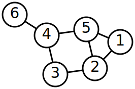

 ^[File:6n-graf.svg. (2020, January 12). Wikimedia Commons, the free media repository. Retrieved 02:53, February 8, 2020 from https://commons.wikimedia.org/w/index.php?title=File:6n-graf.svg&oldid=386942400.]
The other type of data structure we can use in our programs is the non-linear data structure.
Broadly speaking, non-linear data structures allow us to store data across multiple dimensions, and there may be multiple paths through the data to get from one item to another. In fact, much of the information stored in the data structure has to do with the paths between elements more than the elements themselves.
Non-Linear Data Structure Hierarchy
Just like linear data structures, there are several different types of non-linear data structures. In this case, each one is a more specialized version of the previous one, hence the hierarchy shown above. On the next few pages, we’ll explore each one just a bit to see what they look like.